Climbing
Climbing When Kilimanjaro is brought up in conversation, many instantly think of the African continent where this majestic mountain resides. Yet, not many can pinpoint the exact country it's located in. And even fewer know what makes Kilimanjaro so special. Let's learn more about the tallest free-standing mountain in the world!
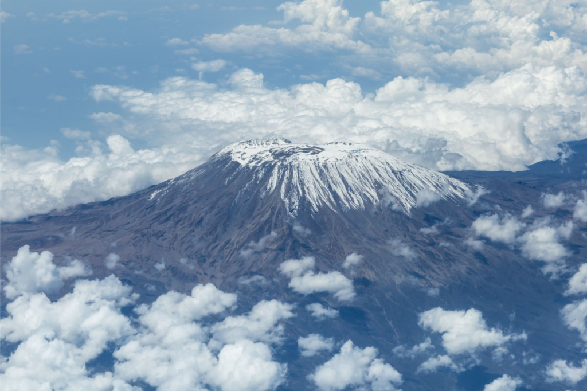
In this article, we will cover:
- The exact location of Mt Kilimanjaro.
- Why it is called the tallest freestanding mountain in the world.
- The truth about whether the mountain consists of several volcanoes.
- How one mountain can encompass five climate zones.
- Unique flora and fauna endemic to Kilimanjaro.
- Where to go to see Kilimanjaro with your own eyes.
Where is Mt Kilimanjaro located?
We all had geography lessons at school. There’s often a task to pinpoint a particular geographic feature on a contour map. If you were to ask people to locate the famed Mount Kilimanjaro, only a few would get it right. More often than not, the guessed location falls within one of the two countries: Kenya or Tanzania.

Kenya or Tanzania?
Occasionally, mistakes happen with Mount Kilimanjaro. People, eager to see the great mountain known for its glaciers at the summit, head to Kenya. Upon arrival, they find out the mountain is actually in neighboring Tanzania. Disappointed, they can only view Kilimanjaro from a distance. And that too, if the weather permits.
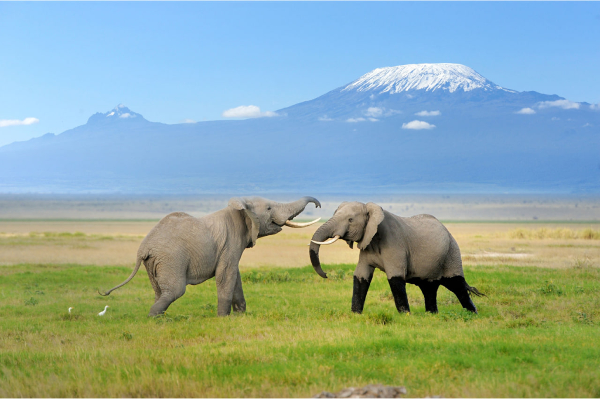
Two perspectives on Kilimanjaro
Why does this confusion persist? The reason is that the most picturesque view of the mountain is from Amboseli National Park. This view can be considered iconic. You gaze at the mountain from a plain where elephants roam. In one frame, you have both the largest land animals and the tallest mountain in Africa. This view has been captured in thousands of photographs, filmed by numerous cameras, and showcased in many documentaries.
Disney's classic animation "The Lion King" opens with scenes of the sun rising over the African savannah. A herd of elephants majestically march in the morning mist. And of course, the snowy peak of Africa's highest mountain towers over the scene.
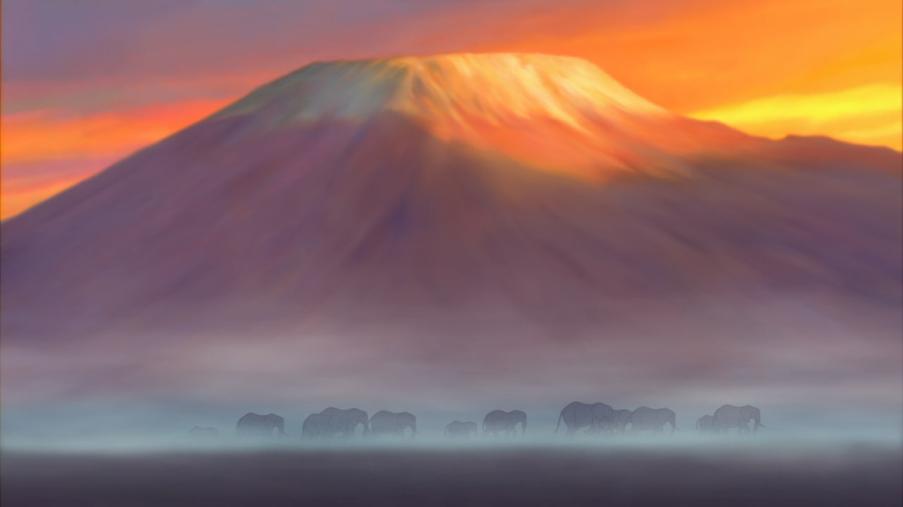
Even in Tanzania, it's not uncommon to see images of Kilimanjaro from Kenya's perspective. This doesn't mean that Tanzania doesn't offer good views of the majestic mountain. There are plenty of such views! But there are no national parks near Kilimanjaro in Tanzania where elephants can roam. That's the main difference.
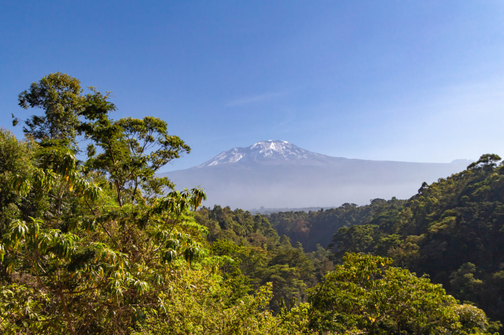
Coordinates of Kilimanjaro
Mount Kilimanjaro has always been located in Tanzania. Even when this territory was called Tanganyika and was under foreign rule, first under Germany and then under Britain. However, there were territorial disputes between neighboring Kenya and Tanzania. Those mainly concerned the lands adjoining the northern side of Kilimanjaro. The disputes were settled in favor of Tanzania by the International Court of the UN in 1982. Meanwhile, the mountain itself has always remained part of Tanzania, and Kenya never laid claim to it.This is easy to see if you look at any Mount Kilimanjaro map.
To put the matter to rest, it suffices to indicate the coordinates of Kilimanjaro. Here they are: 3°04′ S, 37°21′ E.
As we can see by the latitude, the highest mountain in Africa is very close to the equator. It lies only 3° or 340 kilometers (211 miles) to the south. The equator passes through the more northernly located Kenya. In the town of Nanyuki near Mount Kenya, there's a sign marking the spot through which the equatorial line passes.
For comparison, let's look at the coordinates of the border between Kenya and Tanzania. Taking a point north of Kilimanjaro at the Tarakea border post in Tanzania, its coordinates are: 2°59' S, 37°34' E. Thus, the border between the two countries is closer to the equator than Mount Kilimanjaro. Such a meticulous geographic breakdown leaves no doubt even for skeptics. The highest mountain in Africa is located in Tanzania and fully belongs to this country
Mount Kilimanjaro Map & Address
So, the exact address of the legendary mountain is: Africa, United Republic of Tanzania, Kilimanjaro Region, Moshi Rural, Hai, and Rombo districts. Mount Kilimanjaro is entirely located within the national park of the same name. The nearest city is Moshi, located on its southern slopes. Also, relatively nearby, just 60 kilometers (37 miles) away, is the city of Arusha known as the tourist capital of Tanzania. The nearest airport is Kilimanjaro International Airport (JRO).
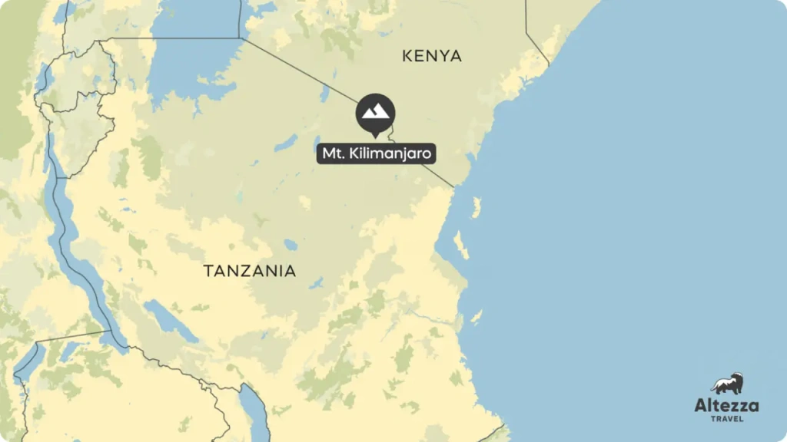
After locating Kilimanjaro on the map, we suggest looking at the map of the mountain more closely. Check out our article with Kilimanjaro maps to see what makes Africa's highest mountain interesting, the routes to its summit, and other fascinating features.
What makes Kilimanjaro so unique?
Kilimanjaro is not just Africa's tallest peak with glaciers near the equator. It is one of the famous Seven Summits as the highest peak in Africa. It's also famed as the world's highest free-standing mountain. This title is inscribed on a plaque at its highest point, Kibo summit. But what does this title truly signify?
Highest free-standing mountain
Most mountains are part of various long chains, commonly referred to as mountain ranges. They form when tectonic plates push against each other. This causes vast sections of the Earth's crust to rise. The Himalayas and the Andes are perhaps the two most famous examples.
Around 25 million years ago, as the Somali plate began to break away from the African plate. As a result, the Great Rift Valley in Africa began to form. This rifting led to the formation of fissures in the Earth's crust and resulted in the emergence of several volcanoes. One of them became Mount Kilimanjaro with its three distinct volcanic cones. Those peaks or volcanic cones are known as Kibo, Mawenzi, and Shira. Mount Meru, visible from Uhuru Peak, is its "younger sibling".
Over the surrounding plains, there's a dramatic elevation change of 4,500 meters (about 14,764 feet) across a distance of 45 kilometers (about 28 miles). This impressive rise makes Kilimanjaro the tallest free-standing mountain on Earth. The nearest significant volcanic mountains are Tanzania's Meru. It stands approximately 70 kilometers (about 43.5 miles) to the southwest. Kenya's Mount Kenya is another prominent dormant volcano 300 kilometers (about 186 miles) to the north. Kilimanjaro mountain towers at 5,895 meters (19,341 feet) above sea level.
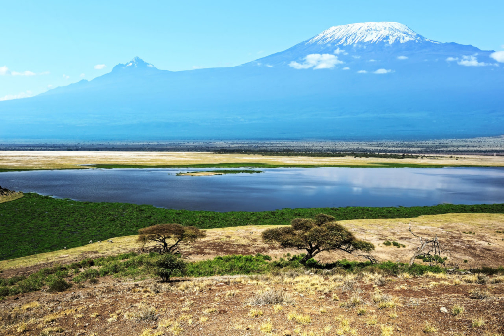
Is it really the highest free-standing peak in the world?
Kilimanjaro is indeed the tallest freestanding mountain on land. However, if we look underwater, we find that the title of the Earth's tallest standalone mountain belongs to Mauna Kea in Hawaii. Its height exceeds 10,000 meters (about 32,808 feet) from its base! For many kilometers around, there are no other peaks. However, only 4,207 meters (about 13,803 feet) of Mauna Kea rise above sea level. Interestingly, just like Kilimanjaro, Mauna Kea is also a volcano.
Mount Kilimanjaro is a stratovolcano
More specifically, it is a complex of three volcanoes. Over two million years ago, a rift in the African plate weakened the top layer of the Earth's crust. That allowed the molten material to break through. The first volcano was named Shira. It ejected magma and formed a unique stone structure, towering over the savannah.
A million years later, underground activity pushed out new molten lava in a major eruption to the west of the Shira volcano. This gave rise to the second volcano, Mawenzi, which erupted twice.
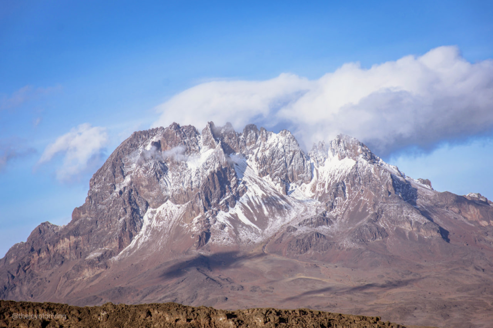
Another half a million years later, the third and tallest volcano, Kibo, emerged between them. Its powerful eruptions and flowing lava destroyed the first Shira volcano. The walls of the latter collapsed, leaving only a small structure on the southern side with a peak called Cathedral Peak. Most of Shira's former crater is now a flat surface. It is referred to as the Shira Plateau and offers a stunning view of the youngest Kibo volcano. That last major eruption created Kilimanjaro as we know it today.
Shira and Mawenzi have ceased activity and are considered extinct volcanoes. However, the young Kibo is classified as a dormant one. According to local tales, its last eruption occurred around 300 years ago, roughly in the 1700s. Fumaroles, from which streams of hot gases emanate, are still present in its inner cone, the Reusch Crater. This is where you can see those symptoms of volcanic activity and the ash pit. At times, the scent of sulfuric gas even reaches the Uhuru Peak, located on the outer crater rim.
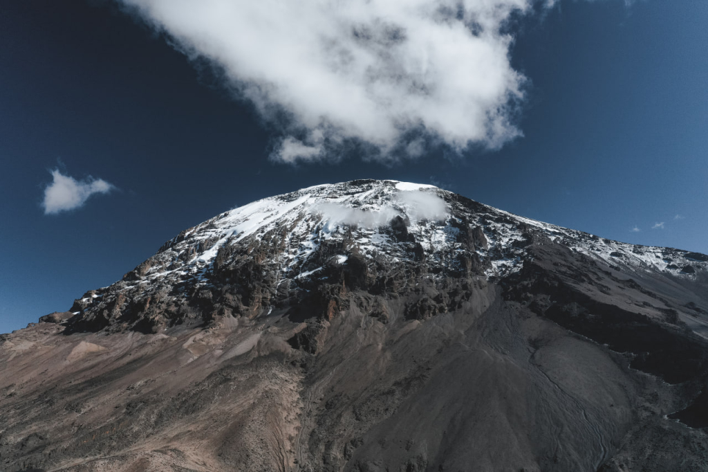
Glaciers and snow cap
The large volcano is renowned for its majestic ice cap. The early European explorers couldn't believe that there were snow and ice walls so close to the equator. From time to time, its peak is adorned with a white blanket of snow. This often happens during the rainy seasons. Typically, there are two periods each year when snowfall occurs at high altitudes here. First, the extended rainy season from March to June. And then the brief rainy spell in November. We once monitored Kilimanjaro's summit via satellite throughout a calendar year. Check out our photo report to see the amount of snow that accumulates on Kibo cone annually.
Unfortunately, due to global climate change, the ice coverage on Kilimanjaro is quickly disappearing. This affects not only the central cone or Kibo's crater rim, but the whole mountain. It is a concern for environmentalists, Tanzania National Parks Authority, and all prospective climbers. The glaciers here are likely to disappear completely within several decades.
Five climatic zones
Thanks to its impressive elevation, Kilimanjaro boasts a range of climatic zones. Each of those fosters distinct ecosystems. While its base lies in equatorial forest zones, its peak reaches altitudes where temperatures can turn water into ice.
The slopes of Kilimanjaro are typically segmented into five distinct zones. These zones are characterized by their unique temperature ranges and precipitation patterns. As a consequence, each zone is home to unique flora and fauna.
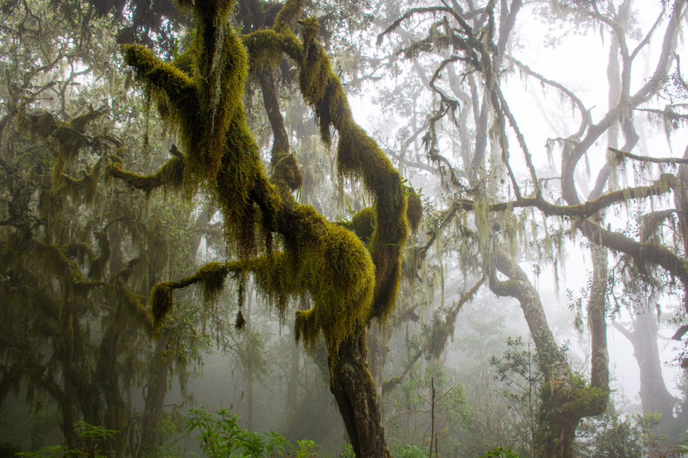
Here's a breakdown of Kilimanjaro's climatic zones:
- Cultivation Zone (800–1,800 meters or 2,600–6000 feet above sea level): Those are the mountain's lower slopes, draped in tropical forests. Here temperatures typically range between 25–30°C (77-86°F). As its name suggests, it's an area cultivated for agricultural produce. Locals primarily grow bananas, corn, and coffee here. Notably, Kilimanjaro coffee is highly esteemed among aficionados.
- Rainforest Zone (1,800–2,800 meters or 6000–9,200 feet above sea level): This section marks the beginning of the Kilimanjaro National Park. No human activity is permitted there, except for tourists climbing Kilimanjaro. The rainforest here earns its name by receiving 1,500–2,000 mm of rain annually. Temperatures range from 10–25°C (50-77°F). The dense woods house diverse flora, inhabited by various wildlife like antelopes, monkeys, and colorful birds. Many trailheads that climb Mount Kilimanjaro begin in this zone.
- Heath and Moorland Zone (2,800–4,000 meters or 9,200–13,200 feet above sea level): Sparse vegetation marks this zone. At Angelino Adventures, we refer to it as the mysterious "lost world." It is home to unique giant groundsels that can grow up to 10 meters (around 33 feet) high. Look out for them when you climb Kilimanjaro! Due to limited rainfall, local plants have evolved to retain water or go for long periods without it. Daytime temperatures typically fluctuate between 5–20°C (41-68°F).
- Highland Desert Zone (4,000–5,000 meters or 13,200–16,400 feet above sea level): Often dubbed the Afro-alpine desert, this barren land is populated mainly by rocks with scarce vegetation like mosses and lichens. Daytime temperatures here vary from 0°C to 10°C (32-50°F).
- Arctic Zone (above 5,000 meters or 16,400 feet above sea level): A realm of rocks and ice. Snow occasionally covers the stone desert. Termed the glacial region, it lacks any flora or fauna. Even during the day, temperatures here often plummet well below 0°C (32°F). Trekkers climbing Kilimanjaro find this zone the most challenging due to altitude sickness and low temperatures.
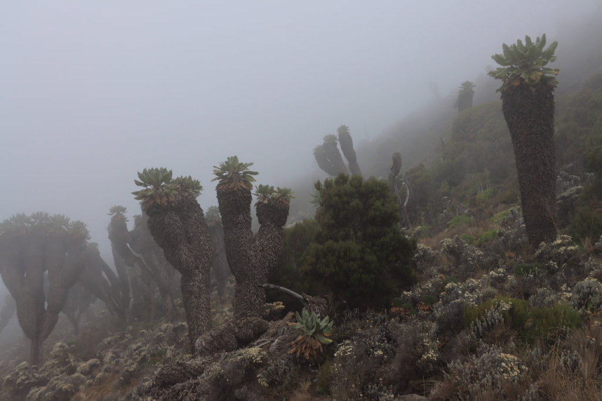
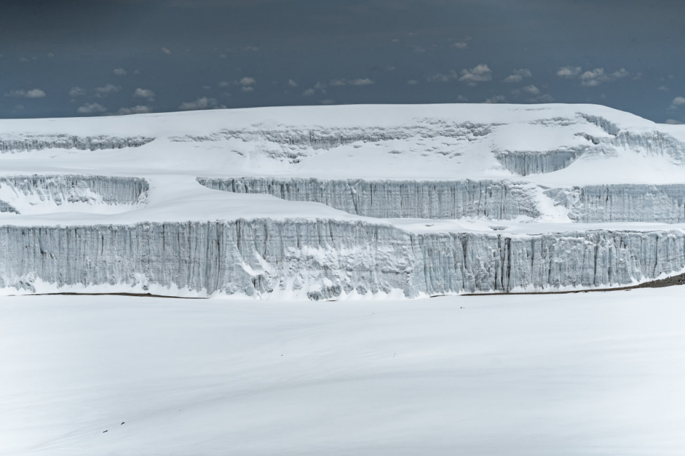
Endemic plants and animals of Kilimanjaro National Park
The slopes of Mount Kilimanjaro have unique geological, climatic, and other conditions. This vast mountain is home to many plants not found anywhere else in the world. Among these plants roam many animals that reside only here.
We'll talk about a few plants and animals: some truly unique, others rare, and a few that, while interesting, can be found in other locations not too far from Mount Kilimanjaro.
Unique plants of Kilimanjaro National Park
We've previously mentioned the splendid Kilimanjaro giant groundsel (Dendrosenecio kilimanjari). They abundantly grow in the moorland and afro-alpine deserts of the mountain. These tree-like plants can store water in their trunks to survive long periods without rain. Giant groundsels are remembered by anyone who climbed Kilimanjaro.
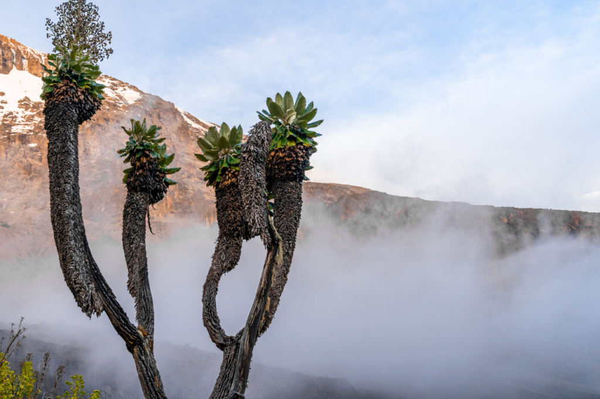
Resembling giant candelabras due to their shape, the plants can grow between 3 to 10 meters (0 to 33 feet) in height. The top of each plant features broad leaves, covered in silvery hairs. The leaves protect them from frost and the powerful sunlight typical of such altitudes. The giant groundsel primarily thrives between 2,800 to 4,500 meters (9,186 to 14,763 feet) above sea level.
These epic groundsels have an average growth rate of only 3–5.5 cm (1.2–2.2 inches) annually. The tallest of these plants on Kilimanjaro are believed to be close to 250 years old. Their majestic presence is indeed a sight to behold when climbing Kilimanjaro.
Lobelia deckenii is another signature plant of Kilimanjaro. It is native not just to this mountain but also to several others in East Africa. Its captivating structure, especially the symmetrically arranged leaves on its stem, is hard to overlook. This lobelia can stand tall at heights of 3–4 meters (10 to 13 feet).
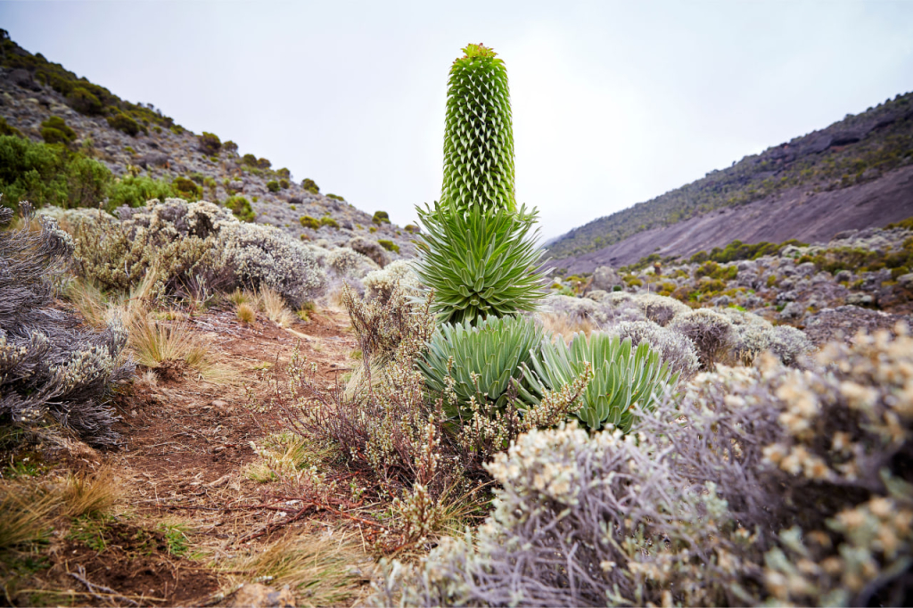
Lobelia deckenii, much like Dendrosenecio kilimanjari, is adapted to thrive at high altitudes under challenging climatic conditions. It can collect and store water. This, besides nourishing the plant, protects its internal tissues. At night, this water transforms into crescent-shaped ice cubes. Regardless of their intriguing beauty, one shouldn't extract them from the plant. This ice acts as a protective barrier for the lobelia.
One particularly attractive flower native to Kilimanjaro and a few other mountains in the region is the Kilimanjaro impatiens (Impatiens kilimanjari). This plant earned its name due to a distinctive reaction. When its seeds mature, even the slightest touch causes the seed pod to crack open explosively, scattering the seeds. This is an evolutionary method to spread across a wider territory.
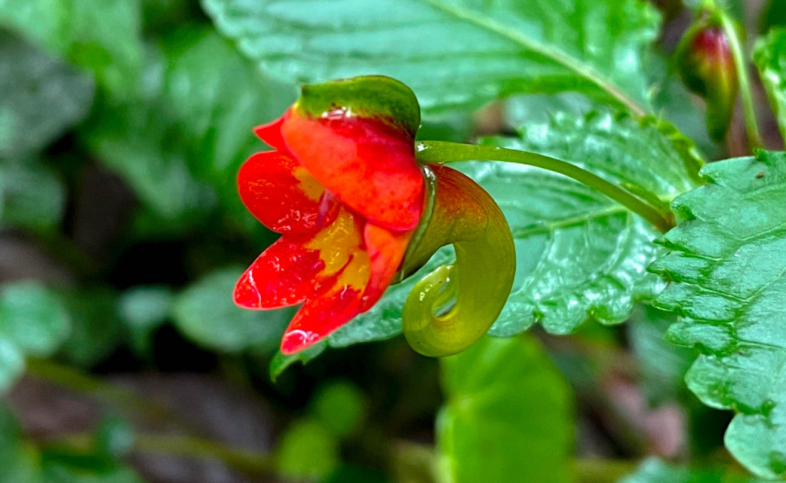
The Kilimanjaro impatiens, stands out in its natural habitat. It has a distinctive shape reminiscent of a sea horse and is often dubbed the "elephant’s trunk flower". Its tubular structure gracefully opens to reveal rosy-red petals at the top. This plant typically grows to heights between 20 and 50 centimeters (8 to 20 inches). The impatiens thrives in the lush underbrush of Kilimanjaro's forested terrains.
Another plant endemic to Kilimanjaro is the Kilimanjaro everlasting (Helichrysum kilimanjari). It is a herbaceous plant with daisy-like flowers. It flourishes in the heathland, favoring the rocky terrains of Mount Kilimanjaro. It will add beauty to some barren landscapes you will while climbing Kilimanjaro. The name "everlasting" reflects its resilience, thriving where many plants would not survive. This is the highest-altitude flowering plant on the slopes of Mount Kilimanjaro, capable of enduring frosty nights and arid conditions.
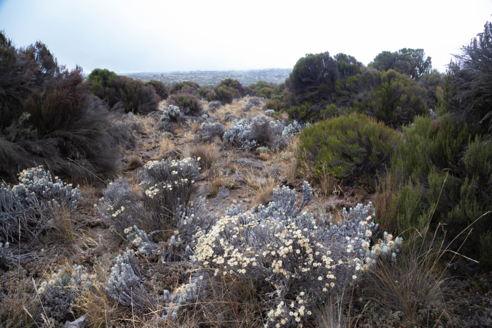
Unique fauna of Kilimanjaro
There are many endemic species found around Mount Kilimanjaro. Two notable mentions are the Kilimanjaro shrew and the Delectable soft-furred mouse. Both these small mammals remain under-researched, with limited information available about them. There aren’t even any good pictures available that we can show you.
The Kilimanjaro shrew (Crocidura monax) inhabits the alpine regions of the mountain. It favors meadows or even rocky terrains. This creature features short fur in shades ranging from brown to gray or reddish-brown. The shrew has a comparatively short tail for its body, a pointed snout, and small eyes. Intriguingly, it has adapted exceptionally well to the high-altitude conditions characterized by low oxygen levels and cold temperatures. However, the precise mechanisms of its adaptation remain a mystery. And in general, little is known about this particular shrew.
More is known about the Delectable soft-furred mouse (Montemys delectorum). Recent years have seen increased research into its population. However, the animal’s conservation status remains undetermined. It was given such a wonderful name due to its fur, which is soft, fine, and silky. This slender-bodied rodent has a long tail and is primarily nocturnal. The mouse hunts invertebrates and consumes various plants.
These mice dwell in forests at altitudes ranging from 1,000 to 2,400 meters (approximately 3,300 to 7,900 feet) above sea level. Beyond Mount Kilimanjaro, the Delectable soft-furred mouse is found in other high-altitude regions of East Africa and nearby areas. Continued research might reveal more about its life. Perhaps, it will clarify the classification of this species further based on its various habitats.
However, we do have a photograph of another rodent endemic to Kilimanjaro – the Mount Kilimanjaro vlei rat (Otomys zinki). Similarly to some other endemics, limited information is available about it. It exclusively resides on this mountain, primarily between altitudes of 2,300 to 4,000 meters (approximately 7,500 to 13,100 feet). Especially in swamp areas and floodable meadows. This species is classified as Vulnerable.
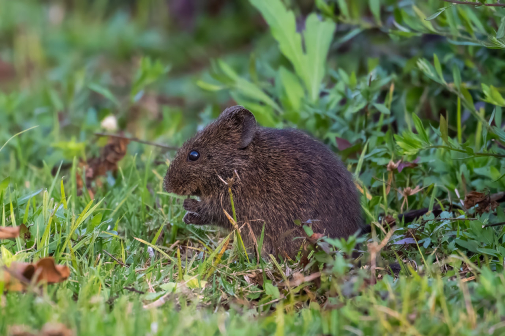
Within the chilly mountain streams of Kilimanjaro, one can find a frog called Strongylopus kilimanjaro. Little is known about this amphibian, with its description based on just three specimens discovered in 1936. Those specimens were observed in the so-called Heather-Moorland Zone, situated at an altitude of 3,230 meters (10,597 feet) above sea level. Perhaps you can spot them when you climb Kilimanjaro!
You can see these endemic frogs on moss-covered stones, near streams, and small ponds. Their camouflage consists of bright green or yellowish-green shades, often with spots or markings in black or dark brown. During mating seasons, males can be heard emitting high and melodious calls to attract females.
Living amidst the meadows, shrubs, and stones of the mountain is a colorful lizard known as Agama lionotus. It's the males that truly stand out with their striking and contrasting colors of red, orange, blue, green, and black. Females are more subdued, primarily gray or greenish with black stripes.
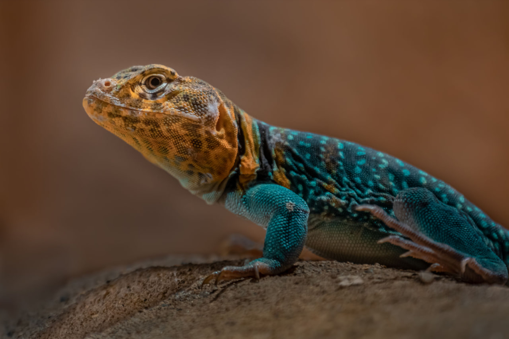
These agamas are diurnal, frequently basking in open spaces under the sun. They have a preference not just for stones but often trees as well.
Another reptile considered endemic to Kilimanjaro is the Kilimanjaro two-horned chameleon (Kinyongia tavetana). It inhabits elevations from 800 to 2,700 meters (2,600 to 8,850 feet) above sea level. You can find it in Kilimanjaro's forests and in several other neighboring mountains of East Africa.
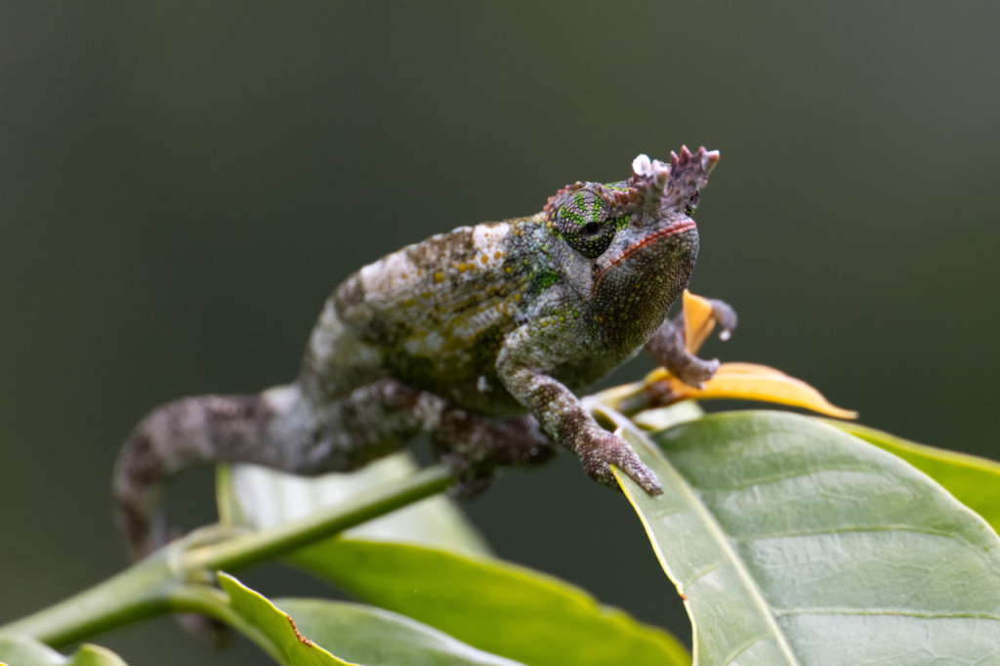
These are small chameleons measuring up to 20 centimeters (about 7.9 inches) in length. They're dubbed "two-horned" due to the two protruding pseudo-horns positioned between their eyes. The scientific name, Kinyongia tavetana, references the northern Kenyan district of Taita-Taveta. Within that district lie the hilly Taita Mountains. They are home to chameleons bearing a striking resemblance to this species. Today, that relative is recognized as a distinct species (Kinyongia boehmei). Yet, the topographical moniker remains associated with the Kilimanjaro chameleons.
The two-horned Kilimanjaro chameleon exhibits hues of brown, green, and gray. Interestingly, a chameleon's color can fluctuate based on mood and health. For instance, when asleep, they appear less vibrant. And as they age or fall ill, the vibrant colors diminish also.
Kilimanjaro birds
Among the birds, noteworthy mentions include the Kilimanjaro White-eye, Abbott's Starling, and Taveta Golden Weaver. These birds, as well as other mentioned animals and plants, might inhabit regions beyond Kilimanjaro. Some may not strictly be Tanzanian endemics, having been spotted in neighboring Kenya since the mountain is located near the border. These species are highlighted because travelers most often encounter them when going to climb Kilimanjaro.
The Taveta Golden Weaver (Ploceus castaneiceps) is a vibrantly colored bird endemic to the border regions of Kenya and Tanzania. The name "Taveta" stems from a bordering region in Kenya. With its radiant golden-yellow plumage, this species is a true standout. It is often found in reedy thickets and swampy areas of the savannah. The bird also been observed in forests at elevations up to 1,500 meters (4,921 feet) above sea level. Renowned for its complex nests, the Taveta Golden Weaver skillfully utilizes its robust claws and beak to construct characteristic nests similar to those of other weaver species.
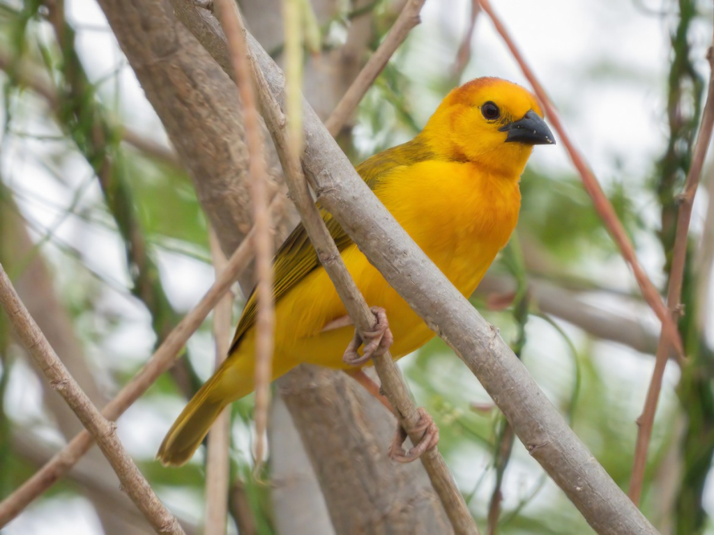
Abbot's Starling (Arizelopsar femoralis) inhabits the tropical forests surrounding three mountains: Kilimanjaro, Meru, and Kenya. This bird is distinguished by its dual-colored plumage: blue-black on top and a white belly. Abbot's Starling is considered rare, and its habitats are highly fragmented. It faces a threat of extinction.
A truly endemic species found only within the territory of Tanzania is the Kilimanjaro White-eye (Zosterops eurycricotus). This small, olive-yellow bird resides in the highland forests of Kilimanjaro. These birds can often be seen in flocks. The Kilimanjaro White-eye differs from other white-eyes by the broad white ring surrounding its eyes. It's one of the most endearing birds one can encounter in the Kilimanjaro region, and due to its plush green appearance, we affectionately refer to it as the "green fluffball."
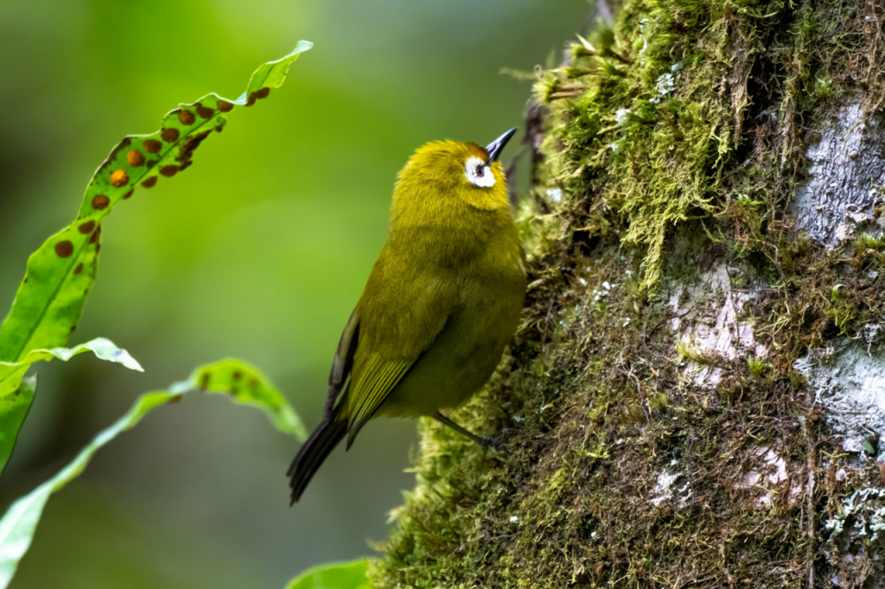
How to see Kilimanjaro with your own eyes?
Kilimanjaro, with its distinct ecosystem, stands as a beacon for adventurers. Whether you're an avid climber eyeing the summit or a traveler with a penchant for nature's wonders, this region promises a memorable experience. Embarking on a journey to climb Kilimanjaro can become a highlight of your life.
Beyond the mountain, Tanzania boasts a wealth of natural attractions, teeming with diverse flora and fauna. Why not extend your visit to Kilimanjaro with a safari through the captivating national parks of northern Tanzania?
Our team is at your service. Inform them of your interests, and they'll design an itinerary tailored to your preferences. Beyond the thrill of standing on the "roof of Africa" and capturing awe-inspiring photographs, you'll have the opportunity to delve into other untouched natural territories.
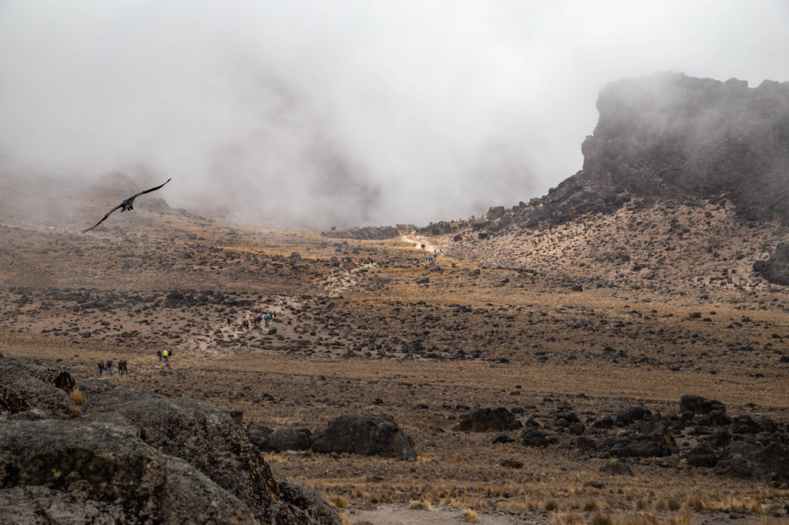
Many adventurers flock to Kilimanjaro to climb its majestic summit. The good news is that it's not a technical climb. This means that almost anybody in reasonable physical shape can do it! Acute mountain sickness or altitude sickness is often the main challenge. However, with a trustworthy and experienced tour operator, there is no need to worry. Your trip will be safe and incredibly memorable!
With Angelino, you can climb Kilimanjaro's majestic Uhuru Peak. Or undertake a day-long hike via the picturesque Marangu route. This short expedition will immerse you in the lush forests of Kilimanjaro. And, if fortune favors, you'll encounter its diverse wildlife and avian inhabitants. On the journey, you’ll have a chance to visit cascading waterfalls and participate in an insightful exploration of coffee cultivation — from bean to brew.
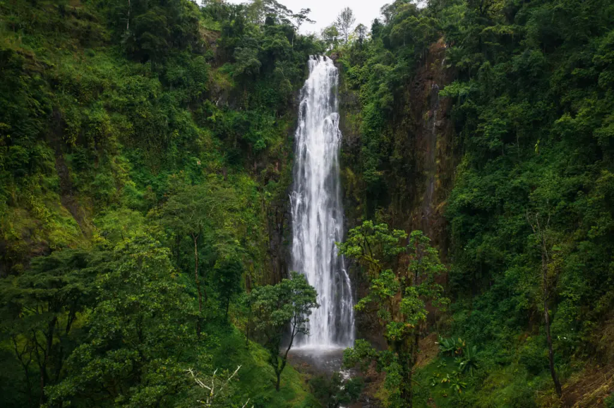
Wishing to see the magnificent slopes and peaks of Mount Kilimanjaro from various perspectives? We offer a breathtaking helicopter sightseeing tour around the great mountain. This adventure promises unparalleled views of Africa's tallest peak.
But where is Kilimanjaro located?
Though we might sentimentally say it's "In our hearts". We've spent years living at its foothills, organizing expeditions, and even making many ascents. Angelino Adventures remains committed to the local community. Our active involvement in social and environmental projects promotes sustainable tourism around Kilimanjaro.
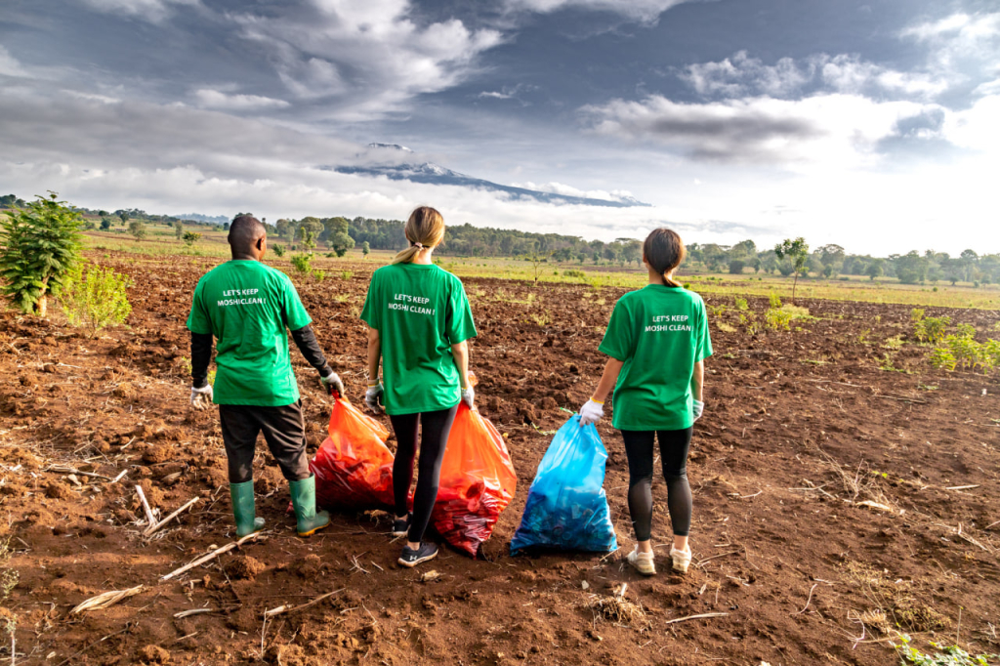
Finally, here is the exact information about Kilimanjaro’s location
- Geographical Coordinates: 3°4′33″ S, 37°21′12″ E (-3,075833, 37,353333)
- Location/Continent/Country: Africa, Tanzania, close to the Kenyan border
- Type of Formation: Mountain, stratovolcano (dormant)
- Mountain Range: East African Rift Valley
- Age: Pliocene
- Distance from Earth's Center: 6,384,134 meters (or about 20,935,892 feet, ranking 4th globally)
- Elevation: 5,895 meters (or 19,341 feet) above sea level
- Highest Point: Uhuru Peak
- Volcanic cones: Kibo, Mawenzi, and Shira
- First Ascent (documented): 1889 by Hans Meyer, Ludwig Purtscheller, and Mwini Amani
- Cultural Status: A UNESCO World Heritage Site
- Additional Features: Africa's highest mountain and a National Park
- Nearest International Airport: Kilimanjaro International Airport (JRO)
- Nearest Cities: Moshi, Arusha
- Tour Operator: Angelino Adventures
For even more insights about Kilimanjaro, delve into our article, 10 Facts About Africa's Highest Mountain.
All content on Angelino Adventures is created with expert insights and thorough research, in line with our Editorial Policy.


Want to know more about Tanzania adventures?
Get in touch with our team! We've explored all the top destinations across Tanzania. Our Kilimanjaro-based adventure consultants are ready to share tips and help you plan your unforgettable journey.
 Tanzania Safaris
Tanzania Safaris
 Kilimanjaro and other mountains
Kilimanjaro and other mountains
 About Angelino Adventures
About Angelino Adventures
 About Tanzania
About Tanzania


Is it possible to see Mt. Kilimanjaro from Arusha?
In very good and clear weather, you can see it from the roof of the Gran Melia Hotel or a balcony of the Ngaresero Mountain Lodge. However, it may be difficult to see from the rest of Arusha due to the hills surrounding the city. You may catch a glimpse of Mt. Kilimanjaro upon arrival at the Kilimanjaro International Airport, or you could join one of our day trips to see it: https://angelinoadventures.com/day-trips/kilimanjaro-day-hike.